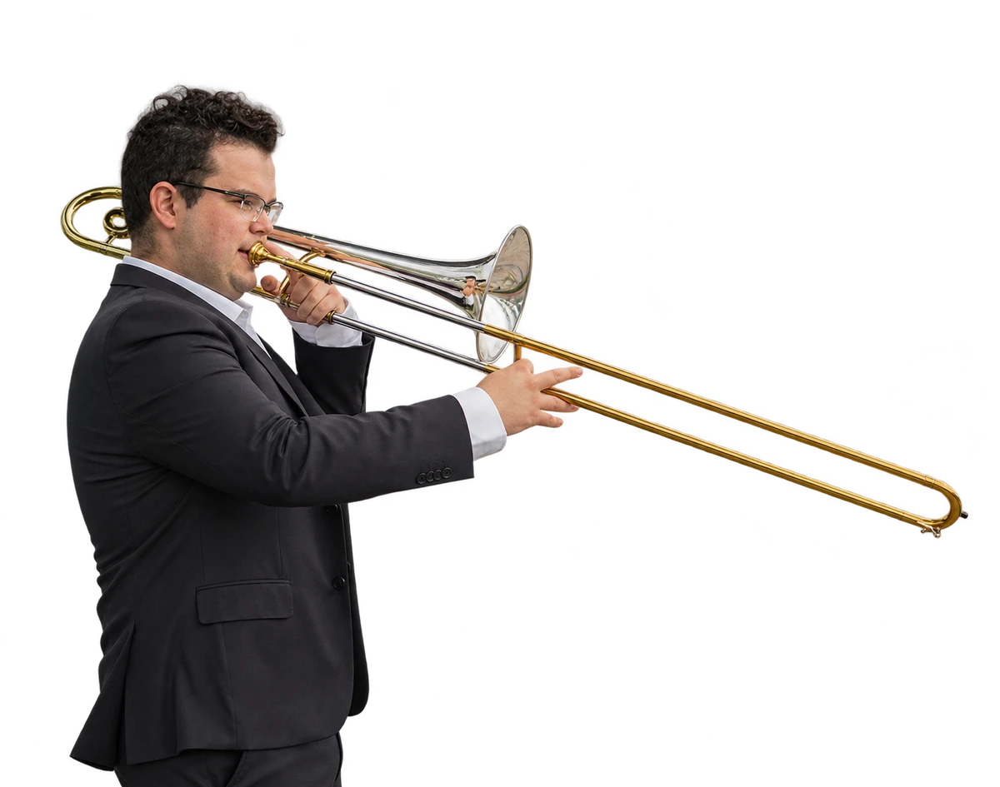
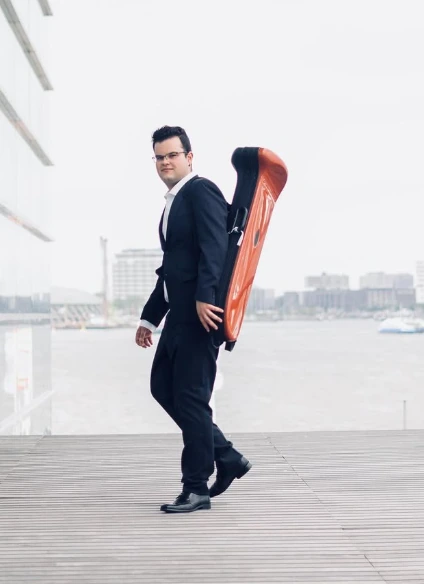
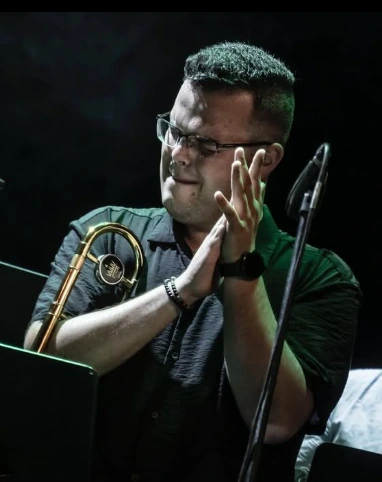
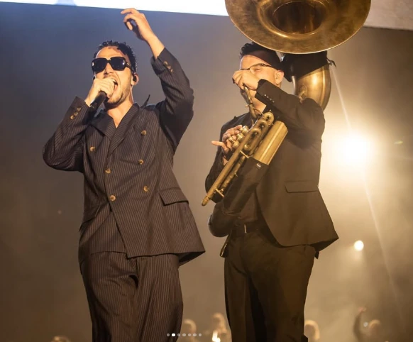
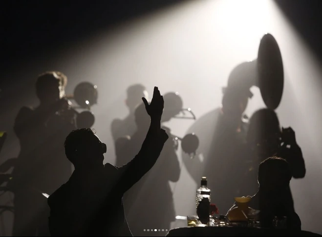
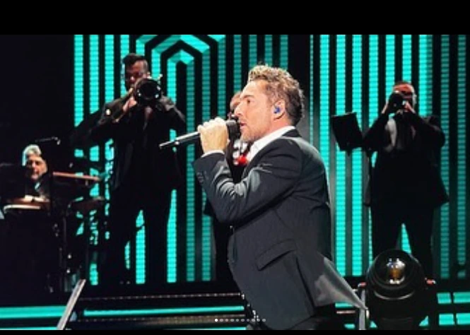
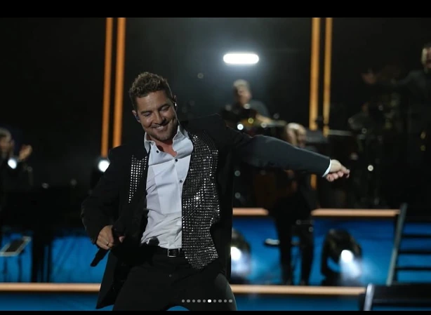
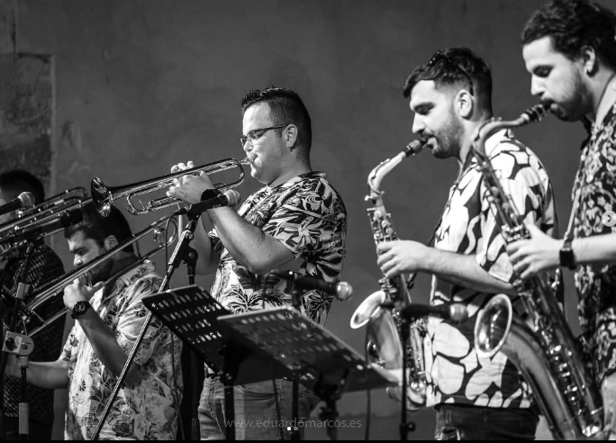

01 / CUÉLLAREL PRIMER
EL PRIMER
COMPÁS.
Álvaro empieza en la escuela de música de Cuéllar. El inicio de un camino que se construye nota a nota.

MÚSICA EN PRIMERA PERSONA.UN RECORRIDO QUE EMPIEZA POR ESCUCHAR.
Entre el sonido del metal y el silencio antes de entrar. La música se construye ahí: en cada ensayo, en cada encuentro, en cada nota compartida.
*1998: fecha de nacimiento provisional, pendiente de confirmar.
EL CAMINO / TRES LUGARES. UNA MISMA VOCACIÓN.
Álvaro empieza en la escuela de música de Cuéllar. El inicio de un camino que se construye nota a nota.
Comienza una nueva etapa de formación en Musikene. Más música, más aprendizaje y nuevas formas de escuchar.

Un máster en Holanda abre otro capítulo. Ese mismo año comienza también su etapa con C. Tangana.

2021 / LA MÚSICA NOS ENCUENTRA

DE ESCUCHAR.
A HACERSE ESCUCHAR.
En 2021 comienza su etapa con C. Tangana. Una mesa, una banda y una forma distinta de vivir el escenario: la música como un encuentro.

2022 / CAMBIA EL ESCENARIO. SIGUE LA MÚSICA.

OTRA VOZ.
LA MISMA PASIÓN.
La fuerza de una voz. El pulso de una banda. El trombón como parte de algo más grande: la emoción de la música en vivo.
EXPLORAR EL DIRECTO
04 / ESTO NO SE QUEDA EN UNA FOTO

EL SONIDO.
EN PRIMERA PERSONA.
Momentos reales. Música en primera persona.
Una pequeña ventana a lo que ocurre sobre el escenario.
Los vídeos se abren aquí con el reproductor de Instagram. Las fotografías son una selección editorial del archivo.